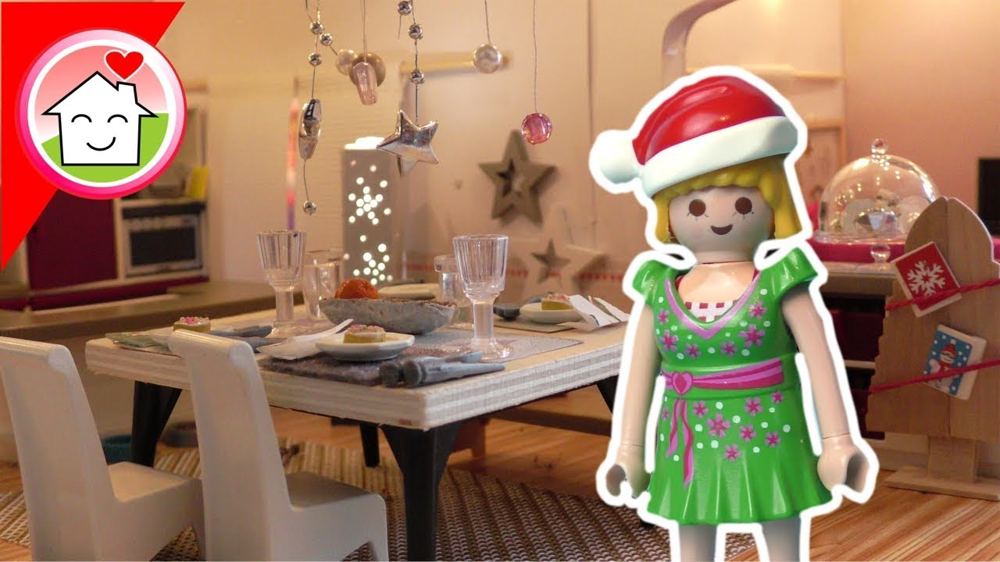
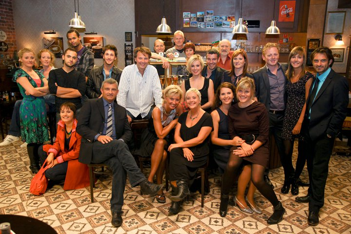

Închinarea în familie – O puteţi face mai plăcută? | Studiu

Salt la conţinut
Salt la cuprins
JW.ORG Schimbaţi limba site-ului ÎNCHIDE Conectează-te (se deschide o fereastră nouă) Căutați pe JW.ORG ARATĂ MENIU PAGINA PRINCIPALĂ ÎNVĂȚĂTURI BIBLICE Afișează Mai multe Răspunsuri la întrebări biblice Versete biblice explicate Instrumente de studiere a Bibliei Pace & Fericire Căsnicie & Familie Adolescenți Copii Credința în Dumnezeu Istoria & Biblia Știința & Biblia BIBLIOTECĂ Afișează Mai multe Biblia online Reviste Cărți & Broșuri Serii de articole Caiete pentru întrunire Serviciul pentru Regat Muzică Drame audio Lecturi biblice dramatizate Materiale video JW Broadcasting ® Bibliotecă online (se deschide o fereastră nouă) REDACȚIA DE ȘTIRI Afișează Mai multe Știri JW Știri pentru jurnaliști Evenimente juridice DESPRE NOI Afișează Mai multe Întrebări frecvente Doresc să fiu vizitat Întruniri Comemorare Congrese Activități Experiențe De pe mapamond Tururi la Betel Contactați-ne Donații (se deschide o fereastră nouă) CONECTARE (se deschide o fereastră nouă) ÎNCHIDE JW.ORGMartorii lui Iehova
Selectaţi limba Română Conectează-te (se deschide o fereastră nouă) PAGINA PRINCIPALĂ ÎNVĂȚĂTURI BIBLICE Învățături biblice Răspunsuri la întrebări biblice Versete biblice explicate Instrumente de studiere a Bibliei Pace & Fericire Căsnicie & Familie Adolescenți Copii Credința în Dumnezeu Știința & Biblia Istoria & Biblia ÎNCHIDE BIBLIOTECĂ Bibliotecă Biblia online Reviste Cărți & Broșuri Serii de articole JW Broadcasting ® Materiale video Muzică Drame audio Lecturi biblice dramatizate Caiete pentru întrunire Serviciul pentru Regat Bibliotecă online (se deschide o fereastră nouă) ÎNCHIDE REDACȚIA DE ȘTIRI Redacția de știri Știri JW Știri pentru jurnaliști Evenimente juridice Informații juridice ÎNCHIDE DESPRE NOI Despre Martorii lui Iehova Întrebări frecvente Doresc să fiu vizitat Contactați-ne Tururi la Betel Întruniri Comemorare Congrese Activități Experiențe De pe mapamond Donații (se deschide o fereastră nouă) ÎNCHIDE Bibliotecă Reviste Turnul de veghe (ediția de studiu) | Martie 2014Aţi dori să citiţi acest articol în %%?
Da NuÎnchinarea în familie – O puteţi face mai plăcută?
REDARE Închinarea în familie – O puteţi face mai plăcută?„În seara dedicată închinării în familie suntem atât de absorbiţi de discuţii, încât deseori se face foarte târziu dacă nu le spun celorlalţi că trebuie să ne oprim”, a spus un tată din Brazilia. Un cap de familie din Japonia a spus că fiul său, care are zece ani, nici nu-şi dă seama cum trece timpul şi vrea ca studiul să continue. De ce? „Îşi doreşte mult să studiem, iar asta îi sporeşte bucuria”, a afirmat tatăl.
Bineînţeles, nu toţi copiii îşi doresc la fel de mult să studieze şi, sincer vorbind, unora s-ar putea să nu le placă închinarea în familie. De ce? Un tată din Togo a spus: „Închinarea la Iehova n-ar trebui să fie plictisitoare”. Dacă închinarea în familie este plictisitoare, se datorează oare aceasta modului în care este condusă? Multe familii au constatat că închinarea în familie poate fi, aşa cum a spus Isaia despre sabat, o adevărată „desfătare” ( Is. 58:13, 14 ).
Taţii ştiu că închinarea în familie este un motiv de bucurie pentru toţi numai dacă se ţine într-o atmosferă relaxată. Ralf, care are trei fete şi un băiat, spune că închinarea lor în familie seamănă mai mult cu o conversaţie degajată decât cu un studiu; toţi se implică. Fără îndoială, uneori ar putea fi greu să păstrezi viu interesul tuturor şi să-i ajuţi să se implice în discuţie. O mamă recunoaşte: „N-am întotdeauna energia necesară pentru a face ca închinarea în familie să fie atât de plăcută pe cât mi-aş dori”. Ce vă poate ajuta?
FLEXIBILITATE ŞI VARIETATE
„Trebuie să fim flexibili”, a spus un tată din Germania, care are doi copii. Natalia, care are două fete, a afirmat: „Cel mai important lucru pentru familia noastră este varietatea”. Mulţi împart închinarea în familie în câteva părţi. „Asta face ca studiul să fie mai dinamic şi îi ajută pe toţi să se implice”, a explicat Cleiton, un tată din Brazilia, care are doi copii adolescenţi. Împărţind studiul în mai multe părţi, părinţii pot acorda atenţie necesităţilor fiecărui copil, mai ales dacă diferenţa de vârstă dintre ei este mare. Părinţii pot aborda subiecte potrivite pentru fiecare membru al familiei şi pot fi flexibili când aleg materialul şi formatul acestuia.
Ce fac unii pentru ca închinarea în familie să fie mai variată? Unele familii încep cu intonarea unor cântări ale Regatului. Juan, din Mexic, a spus: „Cântările creează o atmosferă plăcută şi ne pregătesc mintea pentru materialul pe care-l vom analiza”. Familia sa alege cântări care au legătură cu unele părţi din materialul de studiu.
Sri Lanka
Multe familii citesc împreună un fragment din Biblie. De dragul varietăţii, ei citesc pe roluri. Un tată din Japonia a recunoscut că la început i s-a părut „puţin ciudat” să citească astfel. Însă cei doi băieţi ai lor s-au bucurat mult să citească pe roluri împreună cu ei. Unele familii chiar pun în scenă diferite relatări din Biblie. Copiii „remarcă uneori într-o relatare biblică detalii care nouă ne scapă”, a spus Roger, din Africa de Sud, care are doi fii.
Africa de Sud
Pentru a spori varietatea, părinţii şi copiii pot alege să facă unele activităţi împreună. De exemplu, ar putea construi o machetă a arcei lui Noe sau a templului lui Solomon. Astfel de activităţi presupun cercetări, care pot fi captivante. O fetiţă de cinci ani din Asia a făcut împreună cu părinţii şi bunica ei o planşă de joc bazată pe călătoriile misionare ale lui Pavel. Alte familii au făcut planşe de joc bazate pe relatările din Exodul. Varietatea „a dat un suflu nou închinării în familie şi chiar familiei noastre”, a spus Donald, un tânăr de 19 ani din Togo. V-aţi putea gândi la o activitate care va face ca închinarea în familie să fie mai plăcută?
Statele Unite ale Americii
PREGĂTIREA ESTE INDISPENSABILĂ
Chiar dacă varietatea şi flexibilitatea fac închinarea în familie mai interesantă, pentru ca ea să fie cu adevărat instructivă, toţi trebuie să se pregătească. Uneori, copiii obosesc. De aceea, taţii trebuie să mediteze la materialul ales pentru studiu şi să-şi facă timp pentru a se pregăti bine. Un tată a spus: „Când sunt pregătit, toţi avem parte de mai multe foloase în urma studiului”. Un tată din Germania le spune din timp membrilor familiei sale ce vor analiza în săptămânile care urmează. O familie din Benin, care are şase copii, vizionează uneori la închinarea în familie un DVD produs de organizaţia noastră. Cum se pregătesc ei? Tatăl le dă din timp o listă cu întrebări. Într-adevăr, pregătirea contribuie mult la calitatea închinării în familie.
Când membrii familiei ştiu dinainte ce subiect se va analiza, ei pot vorbi pe marginea lui pe parcursul săptămânii, sporindu-şi astfel entuziasmul. Iar dacă toţi au câte ceva de pregătit, fiecare va simţi că închinarea în familie este pentru el.
STRĂDUIŢI-VĂ SĂ AVEŢI REGULARITATE
Multe familii constată că le este greu să ţină închinarea în familie cu regularitate.
Mulţi părinţi trebuie să muncească ore îndelungate doar pentru a avea ce să pună pe masă. De exemplu, un tată din Mexic pleacă de acasă la şase dimineaţa şi se întoarce abia la opt seara. Uneori ar putea fi nevoie să se schimbe ziua sau ora închinării în familie din cauza unui alt program spiritual.
Totuşi, trebuie să fim hotărâţi să ţinem închinarea în familie cu regularitate. Loïs, o fetiţă de 11 ani din Togo, a spus despre hotărârea familiei ei: „Chiar dacă apare ceva în timpul zilei şi trebuie să începem mai târziu, ţinem întotdeauna închinarea în familie”. Este uşor de înţeles de ce unii îşi planifică închinarea în familie la începutul săptămânii. Dacă intervine ceva neaşteptat, ei o pot replanifica în zilele următoare.
După cum reiese chiar din denumirea ei, închinarea în familie face parte din închinarea noastră la Iehova. Fie ca toţi membrii familiei voastre să-i aducă în fiecare săptămână lui Iehova ‘taurii tineri ai buzelor lor’! ( Os. 14:2 ) Şi fie ca toată familia să se bucure de aceste momente, „căci bucuria lui Iehova este fortăreaţa voastră”! ( Neem. 8:9, 10 )
ÎNCHINAREA ÎN FAMILIE AR TREBUI SĂ FIE:
relaxată
flexibilă
variată
bine pregătită
ţinută cu regularitate
Anterior Următorul Tipărește Partajează Partajează Închinarea în familie – O puteţi face mai plăcută?TURNUL DE VEGHE (EDIȚIA DE STUDIU)
Închinarea în familie – O puteţi face mai plăcută?
Română Închinarea în familie – O puteţi face mai plăcută? https://assetsnffrgf-a.akamaihd.net/assets/m/2014205/univ/art/2014205_univ_sqr_xl.jpg Arată cuprins AnteriorCUPRINS
Următorul Cum putem ajunge la inima rudelor care nu ne împărtăşesc credinţa Cum putem să ne păstrăm spiritul de sacrificiu Cum putem să păstrăm o atitudine pozitivă Închinarea în familie – O puteţi face mai plăcută? Să le acordăm onoare fraţilor şi surorilor în vârstă Cum să le purtăm de grijă celor în vârstă Este cuvântul tău „Da şi în acelaşi timp Nu”?OPŢIUNI DE DESCĂRCARE
Închinarea în familie – O puteţi face mai plăcută? Text Opțiuni de descărcare pentru publicații TURNUL DE VEGHE (EDIȚIA DE STUDIU) Martie 2014 PDF EPUB JWPUB Audio Opțiuni de descărcare pentru materiale audio TURNUL DE VEGHE (EDIȚIA DE STUDIU) Martie 2014 MP3 Partajează Partajează TURNUL DE VEGHE (EDIȚIA DE STUDIU) Martie 2014TURNUL DE VEGHE (EDIȚIA DE STUDIU)
Martie 2014
Română TURNUL DE VEGHE (EDIȚIA DE STUDIU) Martie 2014 https://assetsnffrgf-a.akamaihd.net/assets/a/w/M/20140315/wpub/w_M_20140315_lg.jpg Partajează Partajează TURNUL DE VEGHE (EDIȚIA DE STUDIU) Martie 2014TURNUL DE VEGHE (EDIȚIA DE STUDIU)
Martie 2014
Română TURNUL DE VEGHE (EDIȚIA DE STUDIU) Martie 2014 https://assetsnffrgf-a.akamaihd.net/assets/a/w/M/20140315/wpub/w_M_20140315_lg.jpg Podcasturi AnteriorCUPRINS
Următorul Cum putem ajunge la inima rudelor care nu ne împărtăşesc credinţa Cum putem să ne păstrăm spiritul de sacrificiu Cum putem să păstrăm o atitudine pozitivă Închinarea în familie – O puteţi face mai plăcută? Să le acordăm onoare fraţilor şi surorilor în vârstă Cum să le purtăm de grijă celor în vârstă Este cuvântul tău „Da şi în acelaşi timp Nu”?JW.ORG ® / SITE-UL OFICIAL AL MARTORILOR LUI IEHOVA
Învățături biblice
Răspunsuri la întrebări biblice Versete biblice explicate Instrumente de studiere a Bibliei Pace & Fericire Căsnicie & Familie Adolescenți Copii Credința în Dumnezeu Istoria & Biblia Știința & BibliaBibliotecă
Biblia online Reviste Cărți & Broșuri Serii de articole Caiete pentru întrunire Serviciul pentru Regat Muzică Drame audio Lecturi biblice dramatizate Materiale video JW Broadcasting ®Redacția de știri
Știri JW Știri pentru jurnaliști Evenimente juridiceDespre noi
Întrebări frecvente Doresc să fiu vizitat Întruniri Comemorare Congrese Activități Experiențe De pe mapamond Tururi la Betel Contactați-neLinkuri rapide
Doresc să fiu vizitat Căutați o întrunire (se deschide o fereastră nouă) Căutați un congres (se deschide o fereastră nouă) Ce e nou Materiale video Căutare Ajutor Informații pentru medici Donații (se deschide o fereastră nouă) Watchtower – BIBLIOTECĂ ONLINE™ (se deschide o fereastră nouă) Conectează-te (se deschide o fereastră nouă) JW Library® JW Library Sign Language® Watchtower Library JW Language®Copyright © 2020 Watch Tower Bible and Tract Society of Pennsylvania. CONDIȚII DE UTILIZARE | POLITICA DE CONFIDENŢIALITATE
Selectaţi limba dorită
Limbi:
Partajează
Selectează link-ul Partajează prin e-mail
